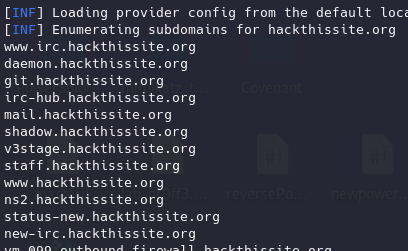
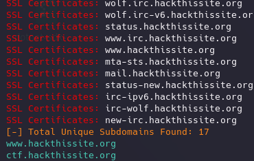

Hay que tener en cuenta que normalmente la superficie de ataque a una aplicación web no se reduce a un solo dominio, sino a todos los subdominios que tenga asociados ya que se encuentran alojados juntos.
Es muy común que en los subdominios haya menos medias de seguridad ya que las inversiones de mantenimiento y blindaje suelen ir dirigidas a webs principales o de acceso masivo ya que todo tiene un coste.
O incluso la posibilidad de olvidar la existencia de uno por parte de la empresa.
https://github.com/projectdiscovery/subfinder
Descubre subdominios validos de una web utilizando fuentes pasivas de información.
sudo apt install subfinder
Vamos a probarla contra una web diseñada para eso.
subfinder -d hackthissite.org > output_subfinder.txt

https://github.com/aboul3la/Sublist3r
Utiliza python para recopilar información de subdominios utilizando OSINT, fuentes publicas de información.
También implementa subbrute que enumera subdominios haciendo peticiones a nameServers públicos. Aunque es una herramienta más activa esta implementa OpenResolvers que permite hacer bypass a los rate limits de un name servers y proporciona un poco de “anonimato”
sudo apt install sublist3r
sublist3r -d hackthissite.org -v

Para utilizar subbrute:
sublister -d hackthissite.org -v -b -o subbrute.txt
Se le puede indicar que haga un escaneo de los subdominios y además que indique cuales tienen ciertos puertos abiertos:
sublister -d hackthissite.org -v -p 80,443
El problema es el ruido que genera.